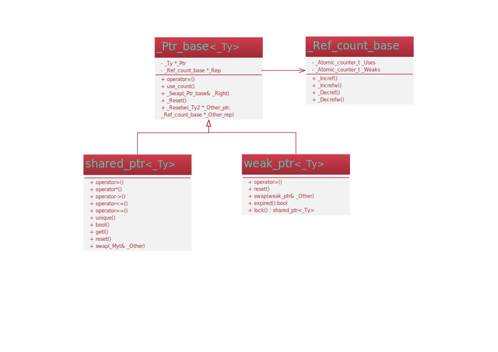

智能指针在c++11标准已经被正式引用，在头文件#include <memory>中。传统智能指针auto_ptr作为一个半成品，已被shared_ptr和weak_ptr取代，
翻译中文名为：共享指针，弱指针。既然都是智能指针，内存释放自然都是自动释放，无需用户管理的。
本文将从源码分析shared_ptr与weak_ptr的关系与使用
UML类图
首先我们看下面智能指针UML类图

- 智能指针都是以模板的形式封装。
- 基类
_Ptr_base<_Ty>是一个完整的智能指针实现,它拥有一个计数器指针_Ref_count_base - 关于这个计数器我们称其为
引用计数,它能同时计数User和weaks,这两个分别统计共享引用数与弱引用数。该类的核心是实现计数的原子操作。以达到线程安全的目的。这也间接说明shared_ptr与weak_ptr都是线程安全的 - 理论上来说，
shared_ptr和weak_ptr是可以不需要的了，核心内容都已经在基类中实现 - 那标准这么做的原因是什么呢？答案就是：限制用户滥用，会降低智能指针的使用安全。所以还是设计两个不同作用的模板目的是明确划分权限。当然也有人说：weak_ptr是对share_ptr存在循环引用（也叫交叉引用）导致内存无法释放而设计的。这个其实无需过多纠结，理解本质就好。
shared_ptr
共享指针对用户使用计数进行管理，当计数为0的时候才真正释放内存。
它提供了丰富的操作接口。使用上和操作普通指针基本无异。注意几个关键接口如上图：
| 方法 | |
|---|---|
| shared_ptr::element_type | 元素的类型。 |
| shared_ptr::get | 获取特定资源地址。 |
| shared_ptr::owner_before | 如果 shared_ptr 是之前指针所命令的，返回true。 |
| shared_ptr::reset | 替换拥有的资源。 |
| shared_ptr::swap | 交换两个 shared_ptr 对象。很快，没做深拷贝 |
| shared_ptr::unique | 测试资源是否唯一的。 |
| shared_ptr::use_count | 计数资源所有者的数量。 |
| 运算符 | |
|---|---|
| shared_ptr::operator boolean-type | 测试资源是否存在。该函数提供了到bool型的隐式转换 |
| shared_ptr::operator* | 获取一个指定的值。 |
| shared_ptr::operator= | 替换特定资源。 |
| shared_ptr::operator-> | 获取指向该指定的值的指针。 |
由于对bool运算符的重载，所以shared_ptr支持if(shared_ptr<int>)判断。 |
weak_ptr
它针对弱引用计数进行管理，当计数为0的时候才真正释放内存。
相对共享指针来说功能就简单了很多,通常使用过程中，先判断指针是否已过期，例如，资源被其他线程释放了，本线程即可通过调用expired()知道资源是否已被释放。注意的是，弱指针是不能直接操作原始指针的，而是通过创建一个shared_ptr间接管理原始指针，我们必须通过lock()接口得到shared_ptr才能进行指针操作。
| 方法 | |
|---|---|
| weak_ptr::element_type | 元素的类型。 |
| weak_ptr::expired | 测试是否过期，该函数本质也是判断用户引用计数是否为0。 |
| weak_ptr::lock | 获取资源的独占所有权，获取shared_ptr。 |
| weak_ptr::owner_before | 返回 true，则此 weak_ptr。(大于) 或提供的指针前顺序。 |
| weak_ptr::reset | 释放的资源。 |
| weak_ptr::swap | 交换两个 weak_ptr 对象。 |
| weak_ptr::use_count | 计数指定的 shared_ptr 对象的数目。 |
| 运算符 | |
|---|---|
| weak_ptr::operator= | replaces 的资源 |
关于交互引用的问题
什么是交互引用？
A类中有成员指针指向B类，B类中有成员指针指向A类。
代码如下：
1 |
|
当我们都用shared_ptr管理成员指针的时候，我们单步调试会发现m_pA,m_pB的引用计数都成了2，那么智能指针是不会析构的，只有为1才会去析构。那么怎么解决这种问题呢？对于m_pA,m_pB任意一个申明成weak_ptr类型即可。随便聊聊auto与unique两个智能指针吧。
auto_ptr
作为一个最早的智能指针，我们看看它的源码
1 | template<class _Ty> |
由上代码可以看出，auto指针，只是封装了裸指针，并在析构函数中自动释放内存。主要就提供了3个接口：get,release,reset。没有引用计数，代码少，功能简单，就一个目的：防止new出的内存忘记delete。
unique_ptr
重点记住该指针不允许copy，只提供move。也没有引用计数，支持内存自释放。
主要功能函数如下：
|Functions||
|–|–|
get | Returns stored_ptr.
get_deleter | Returns a reference to stored_deleter.
release | stores pointer() in stored_ptr and returns its previous contents.
reset | Releases the currently owned resource and accepts a new resource.
swap | Exchanges resource and deleter with the provided unique_ptr.
注意
如果一个指针，交给了智能指针来管理，就不要再使用裸指针操作，因为裸指针操作并不会影响其他智能指针的引用计数。如果手动释放了裸指针内存，当智能制作析构时就会double freee。